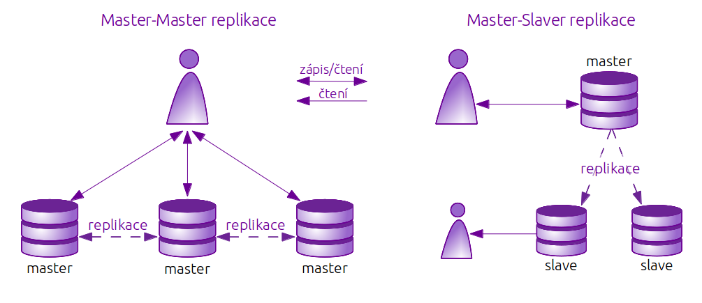
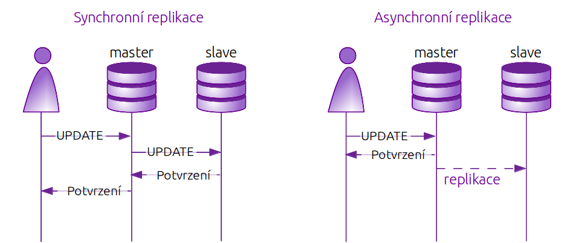
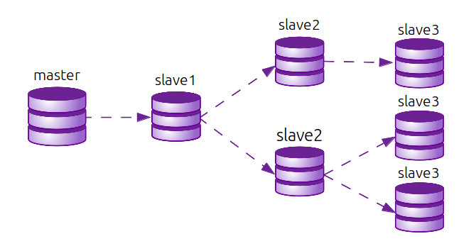

Replikace je proces, u kterého jsou data a databázové objekty kopírovány z jednoho databázového serveru na druhý a poté synchronizovány pro zachování identity obou databází. Synchronizací je v tomto případě myšleno kopírování všech změn, které v databázi nastanou. Použitím replikace je možno data distribuovat na různě vzdálená místa nebo mezi mobilní uživatele v rámci počítačové sítě a internetu (Microsoft, 2013).
Vývojáři mnohých moderních aplikací se musí zabývat přetížením serveru způsobených velkým počtem současných přístupů. V případě přetížení se prodlouží odezva serveru, data tedy přicházejí k uživateli pomalu, nebo server dokonce úplně spadne.
Mezi časté důvody použití databázové replikace tedy patří zajištění dostupnosti dat (angl. High Availability), resp. snížení pravděpodobnosti, že data nebudou dostupná (Obe a Hsu, 2012). Další důvodem je rozložení přístupů do databáze mezi více serverů, takže nebude docházet ke zpomalení výkonu hlavního serveru (Bell et al., 2010). Ke zpomalení serveru dochází také při zálohování, což lze řešit replikací dat na jiný server, na kterém je pak spuštěn proces zálohování.
Všechny databázové servery zapojené do procesu replikace jsou v odborné literatuře nazývány uzly, angl. node. Tyto uzly dohromady tvoří replikační cluster. Při správně nastavené replikaci, jejímž cílem je zajištění vysoké dostupnosti dat (HA), by v clusteru nikdy neměly být méně než tři uzly. Může se totiž stát, že vypadne jeden ze dvou uzlů, čímž dojde k situaci, že data nebudou v daný okamžik zálohovaná.
Uzly v replikačním clusteru mohou mít jednu ze dvou základních rolí, nejčastěji nazývaných master a slave. Master server nebo pouze master je server, který poskytuje data k replikaci, má práva na čtení i zápis a probíhají tedy na něm veškeré aktualizace. Je možno se setkat také s pojmenováním Primary server, Provider, Sender, Parent nebo Source server. Naprosto jiný pojem zavádí SQL Server, který tento zdrojový server nazývá Publisher (česky Vydavatel). Druhý databázový server je nejčastěji nazýván slave, Standby, Reciever, Child nebo Subsciber (česky Odběratel). Poslední pojem je také používán SQL Serverem. Na tento server, který je dostupný vždy jen pro čtení dat, se data kopírují, není však možné na něj změny zapisovat přímo (Riggs a Krosing, 2010).
Podle počtu master a slave serverů v replikačním clusteru se rozlišuje, zda se jedná o jednosměrnou nebo obousměrnou replikaci. U tzv. master-master replikace existuje v replikačním clusteru několik master serverů, tedy těch na které se změny zapisují přímo. To je praktické například ve chvíli, kdy je i samotných zápisů tolik, že jeden server tuto zátěž neunese (viz obr. 4). Zápisy z jednotlivých master serverů se tedy nereplikují pouze na slave servery, ale také na všechny ostatní mastery. Tento způsob s sebou však nese značné komplikace, je potřeba řešit konflikty změn v rámci stejných záznamů, a je tudíž relativně náročný na údržbu. Tato práce se zabývá použitím druhé způsobu, tzv master-slave replikace. Tato replikace používá vždy jen jeden master server v clusteru a dva a více slave servery. Kopie dat tedy probíhá jednosměrně, vždy z master na slave servery. Podle Bella a kol. (2010) mají moderní aplikace často více čtenářů než zapisovatelů, proto je zbytečné, aby se všichni čtenáři připojovali na stejnou databázi jako zapisovatelé a zpomalovali tím jejich práci (Bell et al., 2010).
Při návrhu replikace je potřeba se zamyslet také nad tím, zda bude synchronní či asynchronní. Synchronní replikace neumožní potvrzení transakce modifikující data, dokud všechny změny nejsou přeneseny na alespoň jeden slave server (Böszörmenyi a Schönig, 2013). Tento přístup zajistí, že žádná data nebudou v průběhu zápisu ztracena. V některých případech tento způsob může zbytečně zpomalit rychlost zápisu do databáze, protože je nutno čekat na dokončení zápisu na slave server. Zároveň může způsobit nemožnost zápisu do databáze v případě, že se přeruší spojení se slave serverem nastaveným pro synchronní replikaci. Tento způsob je využíván například při bankovních transakcích, kde je potřeba zajistit, aby všechny operace proběhly na obou stranách. V tomto případě je užití tohoto způsobu zcela nezbytné. Druhým způsobem je asynchronní replikace, při které se nová data mohou zapisovat na master server, přestože ještě nedošlo k replikaci stávajících dat na slave server (Obe a Hsu, 2012). To je sice za běžného provozu rychlejší, v některý případech však může způsobit nekonzistenci dat, například když proběhne transakce na master serveru, který však spadne dřív, než se změna zapíše na slave. V takovém případě se slave změní na master server, ale zároveň se nikdy nedozví o transakci, o které má uživatel informace, že proběhla v pořádku.
Replikace v PostgreSQL umožňuje kopii všech databází a tabulek nebo i výběr jen některých. Více o možnostech a způsobech nastavení replikace.
Dále je možno rozlišovat replikaci pole toho, zda je logická nebo fyzická. Při fyzické replikaci se kopírují na druhý server bloky binárních datových souborů bez znalosti jejich struktury (sloupce, řádky, . . . ). Pro tento způsob kopírování dat je potřeba mít na obou serverech stejnou platformu a architekturu. Tento způsob je velice efektivní a často snazší na konfiguraci.
Naopak při logické replikaci se v přenášených datech přenáší samotný SQL příkaz, který se na slave serveru provede stejně jako na master serveru, nebo informace o tom, na kterých řádcích změny proběhly a jaké. Tento způsob je více flexibilní, umožňuje výběr jen několika databází nebo tabulek a není závislý na architektuře ani operačním systému (Böszörmenyi a Schönig, 2013).
Posledním diskutovaným pojmem je kaskádová replikace, která umožňuje připojit další slave k jinému slave serveru místo k hlavnímu master serveru. Kaskádovou replikaci využijeme v případě, že je třeba replikovat data na větší počet slave serverů v clusteru. V případě, že by se všechny slave servery připojovaly k hlavnímu serveru, došlo by u něj k razantnímu snížení jeho výkonu. Kaskádová replikace může být praktická také v okamžiku, kdy se data přenáší na velkou vzdálenost. V případě, kdy je třeba mít několik replik ve velké vzdálenosti od master serveru, je zbytečné, aby se obě kopie přenášely na tak velkou vzdálenost, když druhý slave server lze připoji k prvnímu.
